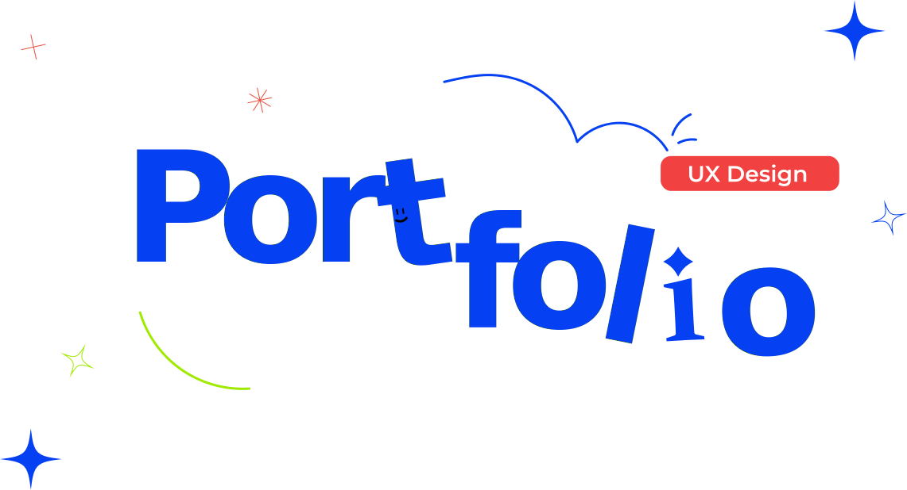

Meu nome é João Pedro, tenho 20 anos e moro no munícipio Jaru localizado no estado de Rondônia. Desde sempre tive interesse na área de informática, especialmente no campo do design de experiência de usuário (UX) e desenvolvimento front-end. Explorar ferramentas, linguagens e conceitos nesse âmbito tem sido uma paixão constante para mim. Através dessa jornada, tenho buscado aprimorar minhas habilidades e expandir meu conhecimento
Projeto 1
HABILIDADES
- Illustrator
- Photoshop
- HTML/CSS
- Figma
- C#
- MYSQL